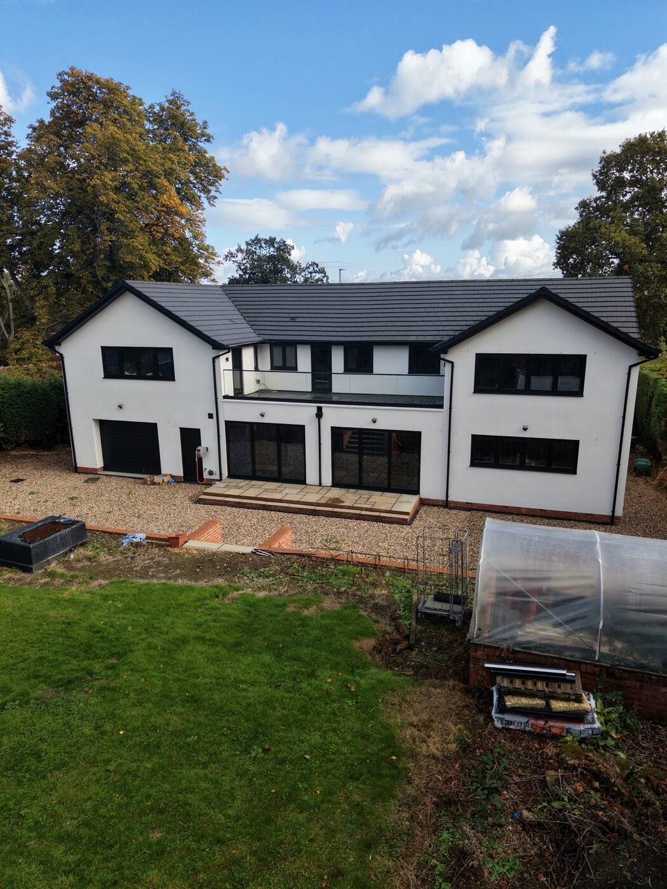

Two-Storey Structural Transformation
TypeExtension
Photos12
AreaBarnsley & South Yorkshire

About the project
We executed a major two-storey structural transformation, starting from reinforced concrete slab foundations. The build features dual pitched roof extensions, crisp white render, modern anthracite windows, and a brand-new tiled roof. Upstairs includes a glazed first-floor balcony, while downstairs opens onto a raised patio via expansive bi-fold doors.